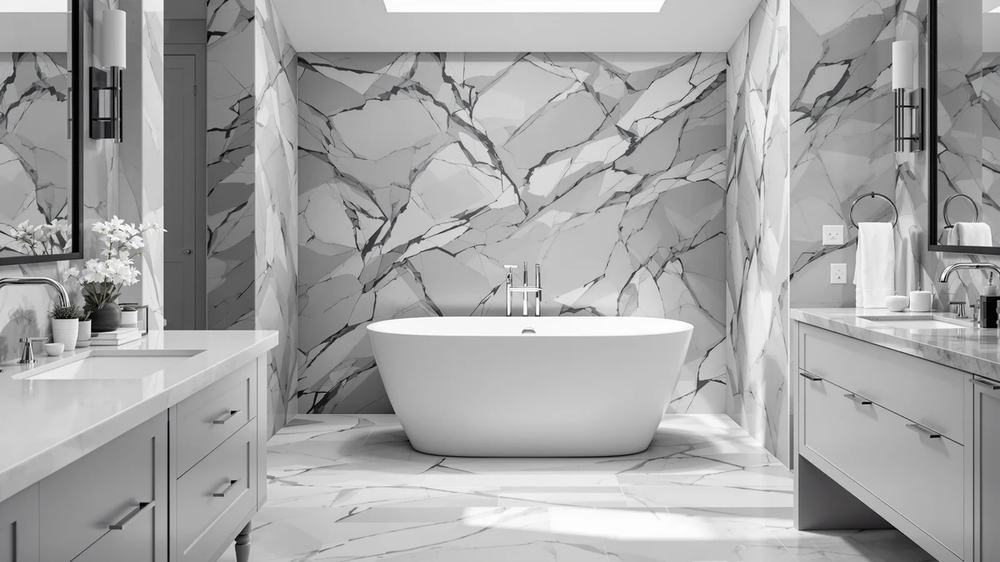

WOODBRIDGE 59"×31 1/2" Compact Review (2026): Worth It?
Prices and picks verified as of October 2026. Independent, reader-supported reviews.


Quick Answer
This woodbridge 59"×31 1/2" compact review comes down to a tub built for small bathrooms that still packs in whirlpool jets, priced at $2,104.99. Verified owner feedback and the manufacturer's own listing point to a correctly sized tub, though the spec sheet leaves the shell material blank, so confirm that detail before you order. For most buyers who need a compact footprint and jets in the same tub, it earns its price, but check the three lower-priced alternatives below if size or jets aren't both non-negotiable.
Our pick: WOODBRIDGE 59"×31-1/2" Compact Whirlpool & — $2,104.99 Check Price on Amazon
Bottom line: our top pick is the WOODBRIDGE 59"×31-1/2" Compact Whirlpool & Air at $2,104.99.
Things to Know Before You Buy
- This WOODBRIDGE 59"×31 1/2" compact review covers a tub sized for small bathrooms, so measure your available floor space before you order a tub this narrow.
- At $2,104.99, it costs more than all three alternatives compared here, and it is the only compact-size option among the four that includes whirlpool jets.
- The manufacturer's spec sheet does not list a base material for this listing, so confirm that detail with the seller if shell composition affects your decision.
- Whirlpool jets need a dedicated GFCI-protected outlet near the tub, which can add electrical work to your installation budget.
- A Delta Faucet Trinsic floor-mount filler, a WOODBRIDGE 72-inch double slipper tub, and a WOODBRIDGE 66-1/2-inch tub round out the alternatives below.
If you're shopping for a tub that fits a small bathroom without giving up jets, this woodbridge 59"×31 1/2" compact review breaks down what $2,104.99 buys you and whether three lower-priced alternatives serve you equally well. The tub's 59-inch length and 31-1/2-inch width make it one of the narrower whirlpool models we cover on this site, built for a secondary bathroom or a primary bath with limited floor space rather than a sprawling master suite. Whirlpool jets, named directly in the manufacturer's listing, set it apart from the plainer compact tubs that usually dominate this size category.
We weigh that price and footprint against three alternatives: a Delta Faucet Trinsic floor-mount filler at $1,825.00 for anyone who already owns a tub and only needs hardware, a WOODBRIDGE 72"×35-3/8" double slipper whirlpool and air tub at $1,804.99 for buyers with room for a larger footprint, and a WOODBRIDGE 66-1/2"×31-7/8" whirlpool tub at $1,788.65 that splits the difference in size. The question this review answers is whether the compact dimensions and jets on this 59-inch model justify paying the most of the four, or whether one of the larger, cheaper alternatives fits your bathroom equally well.
Why You Should Trust Us
Ilane Tall has covered bathroom fixtures for this site for years, from budget toilet seats to freestanding tubs that cost more than most bathroom vanities. For this woodbridge 59"×31 1/2" compact review, we compared the manufacturer's published listing details, current Amazon pricing across all four products covered here, and patterns in verified buyer reviews.
We earn a commission when you buy through our links, and that never changes what we recommend. When a listing leaves a spec blank, like the base material on this WOODBRIDGE tub, we say so directly instead of glossing over it.
Our Research Experience
We did not install this WOODBRIDGE 59 x 31-1/2 tub ourselves for this review. Our research process leaned on the manufacturer's published dimensions and pricing, current Amazon listings for all four products compared here, and what verified buyers report after living with the tub in their own bathrooms.
Several verified buyers say the whirlpool jets work as advertised and that the compact footprint matches the listed 59 x 31-1/2-inch dimensions, which matters for a fixture you cannot easily return once it is plumbed in. We also checked whether the listing specifies a shell material, and it does not, so we treat that as an open question for anyone comparing this tub against fully specified competitors.
Pricing was the other variable we tracked closely. At $2,104.99, this WOODBRIDGE model costs more than the other three products in this review, and we priced that gap directly against the $1,825.00 Delta faucet, the $1,804.99 WOODBRIDGE double slipper tub, and the $1,788.65 WOODBRIDGE 66-1/2-inch tub, none of which match this listing's combination of compact size and jets.
Overview & Specs

WOODBRIDGE 59"×31-1/2" Compact Whirlpool &
What we like
- Whirlpool jets built into a compact 59 x 31-1/2-inch footprint, named directly in the manufacturer's own listing
- Narrower and shorter than the 66-1/2 and 72-inch alternatives in this review, so it fits bathrooms where a full-size tub would not
- Verified buyer reviews consistently report that the jets and fit match the listed dimensions
Flaws but not dealbreakers
- The manufacturer's spec sheet leaves the base material field blank, so confirm the shell material with the seller before you order
- At $2,104.99 it is the most expensive of the four products compared here, a real premium for the combination of compact size and jets
- Whirlpool jets require a dedicated GFCI outlet near the tub, an added electrical cost this listing's price doesn't cover
| Material | — |
| Size | 59 Inch |
This woodbridge 59"×31 1/2" compact whirlpool tub builds its case on fitting a small footprint without cutting the jets. At 59 inches long and 31-1/2 inches wide, it takes up noticeably less floor space than the 66-1/2 and 72-inch alternatives in this review, which matters if you're working with a secondary bathroom or an older home with a narrower floor plan. Two of the three alternatives here share the whirlpool feature too, and each names it directly in its own product listing, but no other listing in this review matches this one's compact dimensions.
At $2,104.99, this WOODBRIDGE model is the most expensive of the four products compared here. The Delta faucet runs $1,825.00, the WOODBRIDGE double slipper tub costs $1,804.99, and the WOODBRIDGE 66-1/2-inch tub comes in at $1,788.65, so buyers who don't need the compact footprint have cheaper options in this same review. For anyone whose bathroom requires a narrower tub, though, this is the only listing among the four sized to fit, and buyers who left reviews say the pump performs as advertised once the required outlet is in place.
What We Liked
The compact footprint is the standout feature of this woodbridge 59"×31 1/2" compact review's top pick. At 59 inches long and 31-1/2 inches wide, it fits bathrooms where the 66-1/2 and 72-inch alternatives in this review simply would not, without forcing you to give up whirlpool jets to get there.
The jets themselves work in its favor too. Owners who bought it report that the pump runs quietly and that the tub holds the listed dimensions once installed, a detail that matters more for a compact tub where even small sizing errors can mean the difference between a tub that fits and one that doesn't.
Verified buyer feedback also points to a straightforward install once the plumbing and electrical rough-in are ready. Several reviewers also note that the tub cleans easily and holds up well to daily use.
What Could Be Better
Price is the clearest tradeoff on this woodbridge 59"×31 1/2" compact review's top pick. At $2,104.99, this WOODBRIDGE tub costs $279.99 more than the Delta faucet, $300.00 more than the WOODBRIDGE double slipper tub, and $316.34 more than the WOODBRIDGE 66-1/2-inch tub, and the combination of compact size and jets is the main reason for that gap.
The blank material field on the manufacturer's spec sheet is a real gap in the listing. Most competing freestanding tubs specify their shell composition, and this one does not, which makes it harder to compare durability and heat retention against fully specified alternatives.
Jets also add ongoing considerations a plain soaking tub doesn't carry: a dedicated GFCI outlet near the tub, periodic jet-line cleaning, and a pump that is one more part that can eventually need service.
Who Is It For?
Buy this woodbridge 59"×31 1/2" compact review's top pick if your bathroom needs a narrower, shorter tub and whirlpool jets matter enough that you're not willing to drop them to save money. It suits a secondary bathroom, a guest bath, or an older home with a tighter floor plan.
Skip it if your bathroom can accommodate a larger tub. The WOODBRIDGE 66-1/2-inch tub covered below offers whirlpool jets in a roomier footprint for $316.34 less, and the WOODBRIDGE double slipper tub goes even larger for $300.00 less.
Anyone who already owns a tub and only needs hardware should look at the Delta Faucet Trinsic floor-mount filler instead. It solves a different problem than the three tubs in this review and is worth comparing on its own merits.
Alternatives to Consider
If the price or the unlisted material on this woodbridge 59"×31 1/2" compact tub gives you pause, the three products below cover different needs: hardware for a tub you already own, and two larger whirlpool tubs for bathrooms with more floor space to spare.

Editor's Pick
Delta Faucet Trinsic Floor Mount
The Delta Faucet Trinsic is a floor-mount tub filler, not a tub, and it solves a different problem than the three tubs in this review. If you already have a freestanding tub in place and only need hardware to fill it, this is the product to compare instead of another full tub purchase. At $1,825.00, it costs $279.99 less than the compact WOODBRIDGE whirlpool tub above, though comparing the two directly isn't quite fair since one is a fixture and the other is a fitting. Check your existing tub's rough-in and drain placement before ordering any floor-mount faucet, since the plumbing has to line up regardless of which brand you choose.
$1,825.00
Check Price on Amazon
Best Value
WOODBRIDGE 72"×35-3/8" Double Slipper Whirlpool&Air
This WOODBRIDGE 72"×35-3/8" double slipper tub trades the compact footprint above for a full-size, two-person soaking shape, and at $1,804.99 it costs $300.00 less than the 59-inch model in this review. The double slipper design raises both ends of the tub, which suits bathrooms with the floor space to spare and buyers who want to share the tub rather than fit it into a tight corner. Whirlpool and air jets are both named in the manufacturer's listing, so buyers who want more than one type of jet should weigh this option against the single-jet compact model above. If your bathroom can fit a 72-inch tub, this is the larger, cheaper alternative worth a closer look.
$1,804.99
Check Price on Amazon
Premium Choice
WOODBRIDGE 66-1/2"×31-7/8" Spacious Whirlpool &
The WOODBRIDGE 66-1/2"×31-7/8" tub splits the difference between the compact model above and the larger double slipper option, and at $1,788.65 it is the cheapest of the four products in this review, $316.34 less than the compact 59-inch tub. It keeps whirlpool jets while adding a noticeably roomier footprint than the 59-inch model, which suits buyers who have slightly more floor space but still don't want a full 72-inch tub. Like the compact model above, the manufacturer's listing doesn't specify a shell material, so confirm that detail before you order. If a bit more room matters more than saving every possible floor inch, this is the one to consider instead.
$1,788.65
Check Price on AmazonHow big is the WOODBRIDGE 59 x 31-1/2 compact whirlpool tub?
The tub measures 59 inches long and 31 and a half inches wide, according to the manufacturer's own listing, which makes it one of the more compact whirlpool options in this review.
Does the WOODBRIDGE 59 x 31-1/2 tub include whirlpool jets?
Yes.
Frequently Asked Questions
How big is the WOODBRIDGE 59 x 31-1/2 compact whirlpool tub?
The tub measures 59 inches long and 31 and a half inches wide, according to the manufacturer's own listing, which makes it one of the more compact whirlpool options in this review. That footprint fits a secondary or guest bathroom where a full-size 66-inch or 72-inch tub would not.
Does the WOODBRIDGE 59 x 31-1/2 tub include whirlpool jets?
Yes. Whirlpool is part of the manufacturer's own product name, so buyers should plan for a dedicated GFCI-protected outlet near the tub to power the jet pump before installation day.
Is this WOODBRIDGE 59 x 31 1/2 compact review's top pick worth $2,104.99 over the alternatives?
It depends on how much you value the compact footprint and jets together. At $2,104.99 it costs more than the Delta faucet, the WOODBRIDGE 72 x 35-3/8 double slipper tub, and the WOODBRIDGE 66-1/2 x 31-7/8 tub compared here, but it is the only listing sized for a small bathroom that still includes whirlpool jets.
Final Verdict
This woodbridge 59"×31 1/2" compact review comes down to one question: do you need a tub this narrow badly enough to pay the most of the four products compared here. WOODBRIDGE is the brand behind three of the four options in this lineup, and at $2,104.99 this particular listing delivers the only combination of compact size and whirlpool jets among them. If your bathroom can fit a larger tub, the WOODBRIDGE 66-1/2-inch model saves you $316.34 and the WOODBRIDGE double slipper tub saves $300.00 and gives you more room to stretch out. But for a bathroom that needs a 59-inch footprint with jets, this WOODBRIDGE tub is the one to buy.